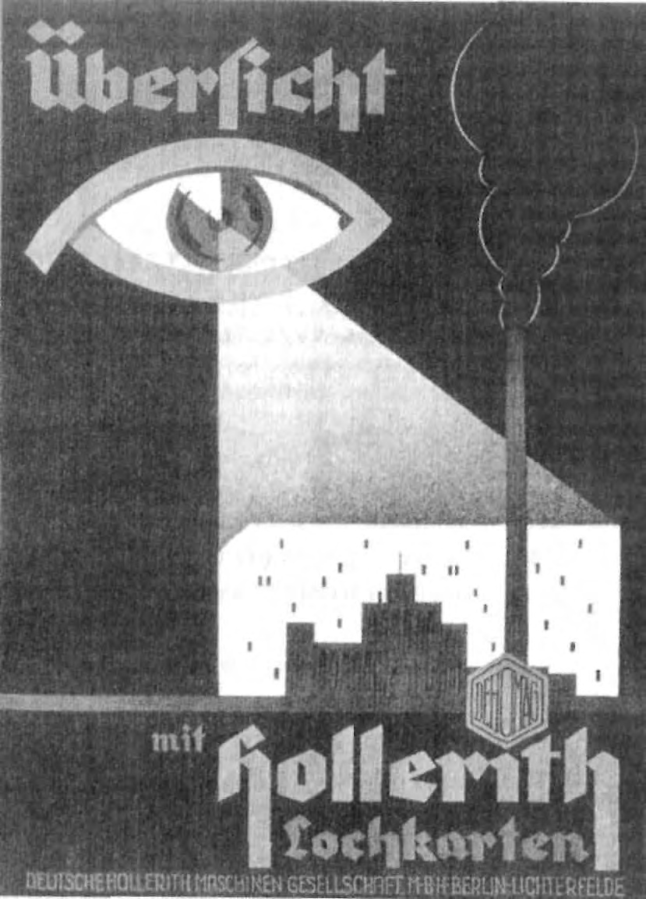
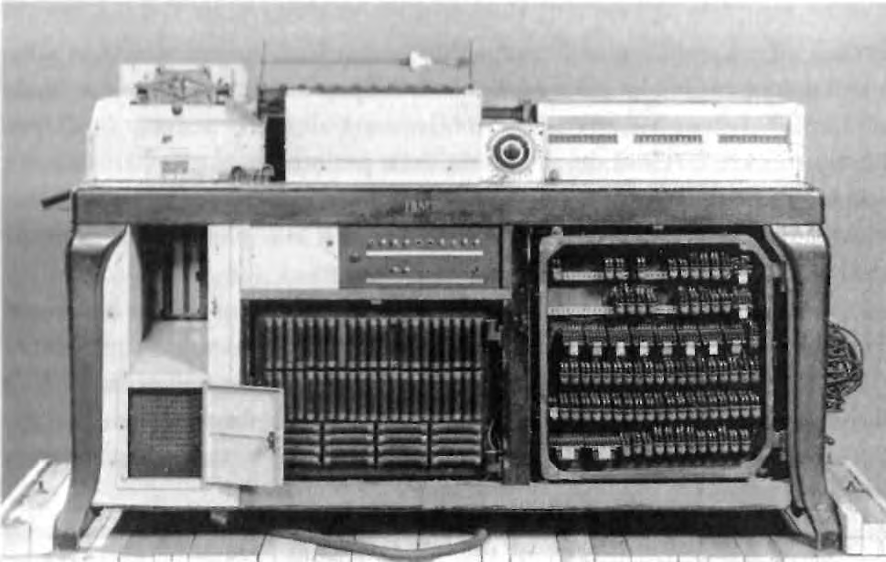
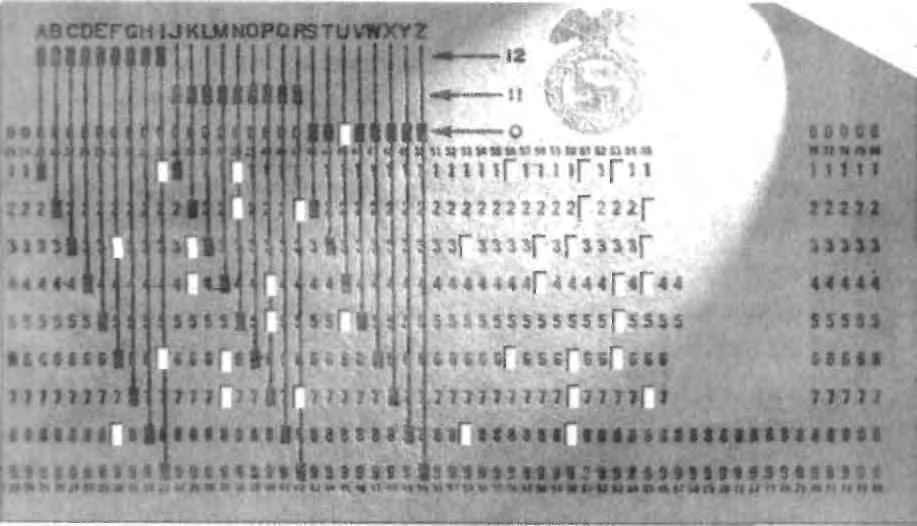

X
THE STRUGGLE TO STAY IN THE AXIS
292
XI
FRANCE AND HOLLAND
333
XII
IBM AND THE WAR
351
XIII
EXTERMINATION
375
XIV
THE SPOILS OF GENOCIDE, I
398
XV
THE SPOILS OF GENOCIDE, II
427
AFTERWORD: THE NEXT CHAPTER
440
REVELATION AND RESPONSIBILITY
455
Notes
520
Major Sources
532
Index

A Dehomag (IBM's German subsidiary) poster, circa 1934. Approximate
English translation is, "See everything with Hollerith punchcards."
(Courtesy of the author)
ACKNOWLEDGMENTS
RARELY DOES A BOOK OF HISTORY INVOLVE SO MANY DOZENS
OF PEOPLE who were so important. But this one does.
Because this investigation involved documents in so many countries
and in so many languages, I relied on a network of researchers and trans-
lators, many of them volunteers. The team consisted of Holocaust survi-
vors, children of survivors, retirees, and students with no connection to the
Holocaust—as well as professional researchers, distinguished archivists and
historians, and even former Nuremberg Trial investigators.
Ultimately, more than 100 people in seven countries participated, some
for months at a time, many for a few weeks between jobs or during school
breaks, and some for just a few hours when we needed specific documents
translated. For most, their mission was simply to scour record groups or
newspaper microfilm looking for certain key words or topics, knowing little
about the implications of what they were finding. Once documents were
located, they were copied and sent to me for review and analysis. When we
discovered a lead, we would ask for follow-up research on a targeted theme
or name.
Researchers and translators were recruited through Internet sites, uni-
versity bulletin boards, Holocaust survivor organizations, archivists, histori-
ans, translator-researcher associations, and friends of friends of friends.
Invariably, researchers were sorry to leave the project because of other com-
mitments, and so they generally replaced themselves with trusted friends
who could carry on their work.
Obviously, space does not permit me to list all those who helped in so
1
many ways. But I would like to highlight a lew. Gaylon Finklea and Mary Jo
Osgood in Austin, Texas, organized a team of volunteers to screen the New
York Times from 1933 to 1945. They worked lunch periods, evenings, and
weekends in front of microfilm readers to create a unique newspaper history
of the evolving business and persecution aspects of the Holocaust-era. The
Texas group was joined by about a dozen researchers in several other cities.
More than 1,500 hours of reviewing was required. Terra York in Washington,
D.C., monitored the team's progress, and like a traffic manager broadcast the
continuously changing microfilm reading assignments.
I personally labored in the archives of England, Israel, Germany, and
America. But I was indispensably assisted in Britain by Jane Booth, Andy
Farenden, Matt Martinson, and others. My efforts in Israel were advanced by
several people, including Ariel Szczupak and Yitzhak Kerem; Kerem also
worked in the archives in Paris, Washington, and New York. In Germany, I
was at first helped by Barbara Haas, Katrin Reiser, and others, but then for
many months by Thomas Kremer.
In America, I was assisted by the accomplished Holocaust author Ger-
ald Schwab, former Nuremberg Trial investigator Fred Thieberger, former
Allied occupation intelligence officer Werner Michel, business ethics profes-
sor Robert Urekew, and researchers Vanessa van der Linde and Kathleen
Dyer-Williams, among many others.
In Holland, research depended upon two doggedly determined univer-
sity students, Willemijn Ruberg and Martijn Kraaij. In Poland, we were
helped enormously by the devoted assistance of Zbig Kanski and others. In
France, Diane Goertz and several others undertook research.
Many translators were kind enough to help, and of course always on a
rush basis. In German, two of the most important were Susan Steiner and
Inge Wolfe, both of whom leapt into complex technical papers. Aldona
Szostek-Pontchek tackled Polish. Especially diligent was the French transla-
tion team, including Jackie Holland, Virginia Rinaldi, and the French team
leader, Terra York; when these fine people weren't translating, they were
doing double duty with English language documentation. On the Labor Day
weekend before publication, four French translators in four cities worked
day and night to help unmask the facts in France.
A team of extraordinary researchers worked closely with me, often from
8 A.M. to midnight, as we searched through stacks of documents seeking
clues and connecting dots. There was no rest for these hard-working, pro-
foundly idealistic people, who often scrutinized hundreds of documents each
day as we checked and triple-checked every granule of the story. These
include Erica Ashton, Sally Murek and Derek Kulnis during the day. Volun-
teer David Keleti, a genetic engineer, helped bolster the nightshift and week-
end efforts. Keleti in particular helped us assemble the murky facts about
IBM in Sweden and Switzerland. Susan Cooke Anastasi, our tireless copy
editor, often worked the overnight shift; whatever errors we made at night,
she would fix by morning.
Although many labored hard, without two heroic individuals this book
simply could not have been completed. The first is Niels Cordes, formerly of
the National Archives microfilm room. Cordes is one of the most methodical,
intuitive, and knowledgeable historians and archivists I have ever met. We
worked together in archives in New York, Washington, and London, and later
he did research with a team in Berlin. Cordes translated many pages of Ger-
man documents. He never failed to display the sharpest insights into the
smallest details.
The second heroic figure is Kai Gloystein. Gloystein first worked on
the project in archives and libraries in Bonn, Cologne, and Berlin, and then
flew to America to help finalize the project working fifteen-hour days with
every fine of the manuscript and thousands of footnotes. He also translated
voluminous documents, contemporary newspapers, and technical journals.
Gloystein's indefatigable commitment to excellence, precision eye for detail
and sharp intellect cast a profound benefit across every page of the manu-
script. He was a warrior for perfection.
A number of leading historians and archivists bestowed great contribu-
tions to my effort through their advice, searches of their records, assistance
in recruiting others, and special accommodations. These men and women are
the stalwarts of history. In some cases, they selflessly offered their support,
talent, and insights for more than a year. In Israel, this includes Gilad Livne
at Israel State Archives who gave me full access to the Eichmann papers, and
Rochelle Rubinstein at Central Zionist Archives, who also helped during my
visit there. In Britain, John Klier from the University of London and the
entire team at the Public Record Office rendered continuing assistance. In
France, Agnes d'Angio and Herve Vernon of the French Economic Ministry
Archive were always responsive. In Holland, Erik Somers of the Institute for
War Documentation assisted for many months, recruiting interns and facili-
tating research.
In Germany, warm friendship and assistance was extended by Ulrich
Soenius at Rheinisch-Westfalisches Wirtschaftsarchiv in Cologne, Peter Grupp
of Politisches Archiv in Bonn, Gerhardt Hirschfeld of Stuttgart's Library of
Contemporary History, Johannes Tuchel of the Memorial for German Resis-
tance in Berlin, as well as Karola Wagner, Anette Meiburg, Siegfried Buttner,
and the entire staff at Bundesarchiv in Lichterfelde. In Poland, Jan Jagielski
at Warsaw's Jewish Historical Institute and Franciszek Piper at the Auschwitz
Museum both found time in their overworked schedule to locate materials.
In the United States, Marek Web helped me at YIVO archives. Michael
Nash at Hagley Museum extended scholar-in-residence privileges that were
most helpful. Henry Mayer and Aaron Kornblum at the United States Holo-
caust Museum made a big difference to our demanding research. At the Na-
tional Archives, I was blessed to encounter a group of irreplaceable archivists
and other staffers, including John Taylor (OSS), Milt Gustafson (State De-
partment), Fred Romanski (Justice), Greg Bradsher (Holocaust-Era Assets),
Louis Holland (captured Nazi microfilms), Marie Carpenti, and many others
in the reading room; these men and women worked with me for a year. They
are the precious vanguard of America's effort to preserve its history.
All who read this book will see the influence of my pre-publication
reader reviewers, each with their own broad or niche expertise. Each read
the entire manuscript and most proffered extensive marginal notes. The re-
viewers included Robert Wolfe (Nazi documentation), Abraham Peck (Holo-
caust history), Henry Mayer (Holocaust documentation), Greg Bradsher
(trading with the enemy), Werner Michel (Allied intelligence and Nazi tech-
nology), Fred Thieberger (Nuremberg war crimes investigation), Gerhard
Hirschfeld (Holocaust in Holland), Erik Somers (Holocaust in Holland),
Bob Moore (Holocaust in Holland), Esther Finder (survivor issues), Robert
Urekew (business ethics), Bradley Kliewer (technology), Shlomo Aronson
(Reich security and Nazi methodology), John Klier (Holocaust studies and
Russian history), Byron Sherwin (ethics during the Holocaust), and many
others in the fields of history, financial crimes, accountancy and business
practices, who gave me the gift of their time and counsel.
All readers and reviewers helped me achieve greater precision. But a
special mention must go to four of the finest minds on the period: Robert
Paxton (Vichy France), William Seltzer (Holocaust census and statistics tech-
nology), Niels Cordes (German history and Nazi documentation), and Erik
Somers (Holland). They influenced the manuscript in profound ways, im-
measurably sharpening its precision.
I received telephonic assistance from Radu Ioanid (Holocaust in Roma-
nia), Henry Friedlander (sterilization and euthanasia), and many others.
Although dozens worked hard to advance my work, two eminent
scholars made a towering contribution. The first is Sybil Milton, who helped
initialize my research. Milton, former historian with the United States Holo-
caust Museum, had crusaded for years to discover the connections between
IBM, its Holleriths, and the Holocaust. She warned me the road would not
be easy. Her original guiding efforts launched me along the correct path.
Unfortunately, Sybil passed away before the project was completed. This
book is a testament to the pillar of Holocaust expertise she has represented
for decades.
The other is Robert Wolfe, rightly at the very pinnacle of the world's
respected experts in Holocaust and captured Nazi documents. Wolfe granted
me his time and unparalleled expertise for over a year, constantly guiding
me, prodding me, and assisting me in pursuit of the most complete and pre-
cisely documented story possible. Wolfe is a tireless warrior for truth in
Holocaust documentation and accountability. His legendary reputation among
the world's archivists and historians is richly deserved. His stamp on this
book and my efforts is unmistakable.
History also recognizes that without a small group committed to uncov-
ering the truth, this book would have never been written. These people
made the difference: Aron Hirt-Manheimer, Arthur Herzberg, and Lawrence
Schiffman, as well as Wolfe and Milton. Without their courage and stamina, it
simply could not have been done.
Assembling the facts was ironically only half the struggle. Publishing
those facts took a historic bravery and literary fearlessness that many lacked.
At the head of the line is Philip Turner, formerly of Times Books, who acquired
IBM and the Holocaust for Random House. Then, for almost eight months, I
was closely supported—hour to hour—by Crown vice president and senior
editor Douglas Pepper, who bonded with the text and the mission to boldly
tell this unknown story to the world. During the past thirty years of investiga-
tive reporting and publishing, I have learned to quickly identify the genuine
pros. Pepper and the entire team at Crown, all under the baton of Crown
editorial director Steve Ross, never shirked. Others, such as William Adams,
Whitney Cookman, and Tina Constable worked for precision and excellence.
From the first moment, they mobilized the commitment and courage to place
the full weight of Crown behind the project.
Crown's commitment was equaled overseas by some of the most distin-
guished editors and publishers of Europe and Latin America. All of them
embarked upon the year-long process of chapter-by-chapter translation.
They extended their support to me as an author and collectively joined to
see this book become a worldwide phenomenon. Many became friends.
These include Margit Ketterle and Christian Seeger of Germany's Propylaen
Verlag (Econ/Ullstein/List); Abel Gerschenfeld of France's Editions Robert
Laffont; Paolo Zaninoni of Italy's RCS Libri/Rizzoli; Liesbeth de Vries of
Holland's Kosmos Z&K; Zbig Kanski of Poland's Graal Agency and Ewelina
Osinska of Muza; Claudio Rothmuller and Paul Christoph of Brazil's Editora
Campus for the Portuguese-speaking countries, and Jorge Naveiro of Argen-
tina's Adantida for the Spanish-speaking countries. British publisher Little,
Brown & Company UK, and its distinguished editorial director, Alan Sam-
son, completed the book's global reach.
My book received the attention of the world's great publishers only
because of the untiring efforts of one person, my agent, Lynne Rabinoff.
Lynne's confidence in me and the project was the dominant force behind the
book assuming a global scope. She fought valiandy—hour to hour—to pre-
serve the quality and integrity of the final product. She was tireless in her
efforts to bring this story to light in the most powerful fashion, and to ensure
that it would reach not only the halls of academia, but readers in some fifty
countries the book will appear in. These few words cannot express my
respect for her as the best agent any author could ever have. As a result of
Lynne's energies and faith, this book became a reality.
Although I was always surrounded by researchers and translators, craft-
ing the product required the continuous and highly amplified creative assis-
tance of Hans Zimmer, Jerry Goldsmith, John Barry, BT, Moby, Tangerine
Dream, David Arnold, Christopher Franke, Trevor Rabin, Trevor Jones, and
many others.
Working virtually fifteen hours per day for a year, often never leaving
my basement for days at a time, eating at my computer screen, imposed a
profound hardship on my loving family—Elizabeth, Rachel, and my parents.
They sustained, encouraged me, and mostly allowed me to detach from daily
family life into the obsessive quest for this story.
I have seen many acknowledgment sections in many Holocaust histo-
ries. But one group always seems to be overlooked. Yet during my labors,
they were never out of sight or out of mind. I acknowledge the six million
Jews, including my grandparents, and millions of other Europeans who per-
ished. Their memory and the image of their punch cards are with me always.
I N T R O D U C T I O N
THIS BOOK WILL BE PROFOUNDLY UNCOMFORTABLE TO READ.
IT WAS profoundly uncomfortable to write. It tells the story of IBM's
conscious involvement—directly and through its subsidiaries—in the
Holocaust, as well as its involvement in the Nazi war machine that murdered
millions of others throughout Europe.
Mankind barely noticed when the concept of massively organized infor-
mation quiedy emerged to become a means of social control, a weapon of
war, and a roadmap for group destruction. The unique igniting event was the
most fateful day of the last century, January 30, 1933, the day Adolf Hitler
came to power. Hitler and his hatred of the Jews was the ironic driving force
behind this intellectual turning point. But his quest was gready enhanced
and energized by the ingenuity and craving for profit of a single American
company and its legendary, autocratic chairman. That company was Interna-
tional Business Machines, and its chairman was Thomas J. Watson.
Der Fuhrer's obsession with Jewish destruction was hardly original. There
had been czars and tyrants before him. But for the first time in history, an anti-
Semite had automation on his side. Hitler didn't do it alone. He had help.
In the upside-down world of the Holocaust, dignified professionals
were Hitler's advance troops. Police officials disregarded their duty in favor
of protecting villains and persecuting victims. Lawyers perverted concepts of
justice to create anti-Jewish laws. Doctors defiled the art of medicine to per-
petrate ghasdy experiments and even choose who was healthy enough to be
worked to death—and who could be cost-effectively sent to the gas chamber.
Scientists and engineers debased their higher calling to devise the instruments
7
and rationales of destruction. And statisticians used t h e i r little known bill
powerful discipline to identify the victims, project and rationalize the bene-
fits of their destruction, organize their persecution, and even audit the effi-
ciency of genocide. Enter IBM and its overseas subsidiaries.
Solipsistic and dazzled by its own swirling universe of technical possi-
bilities, IBM was self-gripped by a special amoral corporate mantra: if it can
be done, it should be done. To the blind technocrat, the means were more
important than the ends. The destruction of the Jewish people became even
less important because the invigorating nature of IBM's technical achieve-
ment was only heightened by the fantastical profits to be made at a time
when bread lines stretched across the world.
So how did it work?
When Hitler came to power, a central Nazi goal was to identify and
destroy Germany's 600,000-member Jewish community. To Nazis, Jews were
not just those who practiced Judaism, but those of Jewish blood, regardless
of their assimilation, intermarriage, religious activity, or even conversion to
Christianity. Only after Jews were identified could they be targeted for asset
confiscation, ghettoization, deportation, and ultimately extermination. To
search generations of communal, church, and governmental records all
across Germany—and later throughout Europe—was a cross-indexing task
so monumental, it called for a computer. But in 1933, no computer existed.
When the Reich needed to mount a systematic campaign of Jewish eco-
nomic disenfranchisement and later began the massive movement of Euro-
pean Jews out of their homes and into ghettos, once again, the task was so
prodigious it called for a computer. But in 1933, no computer existed.
When the Final Solution sought to efficiently transport Jews out of
European ghettos along railroad lines and into death camps, with timing so
precise the victims were able to walk right out of the boxcar and into a wait-
ing gas chamber, the coordination was so complex a task, this too called for a
computer. But in 1933, no computer existed.
However, another invention did exist: the IBM punch card and card
sorting system—a precursor to the computer. IBM, primarily through its
German subsidiary, made Hitler's program of Jewish destruction a techno-
logic mission the company pursued with chilling success. IBM Germany,
using its own staff and equipment, designed, executed, and supplied the
indispensable technologic assistance Hitler's Third Reich needed to accom-
plish what had never been done before—the automation of human destruc-
tion. More than 2,000 such multi-machine sets were dispatched throughout
Germany, and thousands more throughout German-dominated Europe. Card

A Dehomag Hollerith machine. (Photograph courtesy United States Holocaust
Memorial Museum, Washington, D.C.)
sorting operations were established in every major concentration camp. People
were moved from place to place, systematically worked to death, and their
remains cataloged with icy automation.
IBM Germany, known in those days as Deutsche Hollerith Maschinen
Gesellschaft, or Dehomag, did not simply sell the Reich machines and then
walk away. IBM's subsidiary, with the knowledge of its New York headquar-
ters, enthusiastically custom-designed the complex devices and specialized
applications as an official corporate undertaking. Dehomag's top manage-
ment was comprised of openly rabid Nazis who were arrested after the war
for their Party affiliation. IBM NY always understood—from the outset in
1933—that it was courting and doing business with the upper echelon of the
Nazi Party. The company leveraged its Nazi Party connections to continu-
ously enhance its business relationship with Hitler's Reich, in Germany and
throughout Nazi-dominated Europe.
Dehomag and other IBM subsidiaries custom-designed the applica-
tions. Its technicians sent mock-ups of punch cards back and forth to Reich
offices until the data columns were acceptable, much as any software designer
would today. Punch cards could only be designed, printed, and purchased
from one source: IBM. The machines were not sold, they were leased, and
regularly maintained and upgraded by only one source: IBM. IBM subsidiaries
trained the Nazi officers and their surrogates throughout Europe, set up
branch offices and local dealerships throughout Nazi Europe stalled by a re-
volving door of IBM employees, and scoured paper mills to produce as many
as 1.5 billion punch cards a year in Germany alone. Moreover, the fragile
machines were serviced on site about once per month, even when that site
was in or near a concentration camp. IBM Germany's headquarters in Berlin
maintained duplicates of many code books, much as any IBM service bureau
today would maintain data backups for computers.
I was haunted by a question whose answer has long eluded historians.
The Germans always had the lists of Jewish names. Suddenly, a squadron of
grim-faced SS would burst into a city square and post a notice demanding
those listed assemble the next day at the train station for deportation to the
East. But how did the Nazis get the lists? For decades, no one has known.
Few have asked.
The answer: IBM Germany's census operations and similar advanced
people counting and registration technologies. IBM was founded in 1896 by
German inventor Herman Hollerith as a census tabulating company. Cen-
sus was its business. But when IBM Germany formed its philosophical and
technologic alliance with Nazi Germany, census and registration took on a
new mission. IBM Germany invented the racial census—listing not just reli-
gious affiliation, but bloodline going back generations. This was the Nazi
data lust. Not just to count the Jews—but to identify them.
People and asset registration was only one of the many uses Nazi Ger-
many found for high-speed data sorters. Food allocation was organized
around databases, allowing Germany to starve the Jews. Slave labor was
identified, tracked, and managed largely through punch cards. Punch cards
even made the trains run on time and cataloged their human cargo. German
Railway, the Reichsbahn, Dehomag's biggest customer, dealt directly with
senior management in Berlin. Dehomag maintained punch card installations
at train depots across Germany, and eventually across all Europe.
How much did IBM know? Some of it IBM knew on a daily basis
throughout the twelve-year Reich. The worst of it IBM preferred not to
know—"don't ask, don't tell" was the order of the day. Yet IBM NY officials,
and frequently Watson's personal representatives, Harrison Chauncey and
Werner Lier, were almost constantly in Berlin or Geneva, monitoring activi-
ties, ensuring that the parent company in New York was not cut out of any of
the profits or business opportunities Nazism presented. When U.S. law made
such direct contact illegal, IBM's Swiss office became the nexus, providing
the New York office continuous information and credible deniability.
Certainly, the dynamics and context of IBM's alliance with Nazi Ger-
many changed throughout the twelve-year Reich. I want the full story under-
stood in context. Skipping around in th e book will only lead to flawed and
erroneous conclusions. So if you intend to skim, or rely on selected sections,
please do not read the hook at a l l . Make no mistake—the Holocaust would
still have occurred without IBM. To think otherwise is more than wrong.
The Holocaust would have proceeded—and often did proceed—with simple
bullets, death marches, and massacres based on pen and paper persecution,
But there is reason to examine the fantastical numbers Hitler achieved in
murdering so many millions so swiftly, and identify the crucial role of auto-
mation and technology. Accountability is needed.
What made me demand answers to the unasked questions about IBM
and the Holocaust? I confronted the reality of IBM's involvement one day in
1993 in Washington at the United States Holocaust Museum. There, in the
very first exhibit, an IBM Hollerith D-11 card sorting machine—riddled with
circuits, slots, and wires—was prominently displayed. Clearly affixed to the
machine's front panel glistened an IBM nameplate. It has since been replaced
with a smaller IBM machine because so many people congregated around it,
creating a bottleneck. The exhibit explained little more than that IBM was
responsible for organizing the census of 1933 that first identified the Jews.
IBM had been tight-lipped about its involvement with Nazi Germany. So
although 15 million people, including most major Holocaust experts, have
seen the display, and in spite of the best efforts of leading Museum his-
torians, little more was understood about this provocative display other than
the brief curator's description at the exhibit and a few pages of supportive
research.
I still remember staring at the machine for an hour, and the moment
when I turned to my mother and father who accompanied me to the museum
that day and promised them I would discover more.
My parents are Holocaust survivors, uprooted from their homes in
Poland. My mother escaped from a boxcar en route to Treblinka, was shot,
and then buried in a shallow mass grave. My father had already run away
from a guarded line of Jews and discovered her leg protruding from the
snow. By moonlight and by courage, these two escapees survived against
the cold, the hunger, and the Reich. Standing next to me five decades later,
their image within the reflection of the exhibit glass, shrapnel and bullet
fragments permanendy embedded in their bodies, my parents could only
express confusion.
But I had other questions. The Nazis had my parents' names. How?
What was the connection of t h i s gleaming black, beige and silver
machine, squatting silently in this dimly lit museum, to the millions of Jews
and other Europeans who were murdered—and murdered not just in a
chaotic split-second as a casualty of war, but in a grotesque and protracted
twelve-year campaign of highly organized humiliation, dehumanization, and
then ultimately extermination.
For years after that chance discovery, I was shadowed by the realization
that IBM was somehow involved in the Holocaust in technologic ways that
had not yet been pieced together. Dots were everywhere. The dots needed to
be connected.
Knowing that International Business Machines has always billed itself
as a "solutions" company, I understood that IBM does not merely wait for
governmental customers to call. IBM has amassed its fortune and reputation
precisely because it generally anticipates governmental and corporate needs
even before they develop, and then offers, designs, and delivers customized
solutions—even if it must execute those technologic solutions with its own
staff and equipment. IBM has done so for countless government agencies,
corporate giants, and industrial associations.
For years I promised myself I would one day answer the question: How
many solutions did IBM provide to Nazi Germany? I knew about the initial
solution: the census. Just how far did the solutions go?
In 1998, I began an obsessive quest for answers. Proceeding without
any foundation funds, organizational grants, or publisher dollars behind me, I
began recruiting a team of researchers, interns, translators, and assistants, all
on my own dime.
Soon a network developed throughout the United States, as well as in
Germany, Israel, England, Holland, Poland, and France. This network contin-
ued to grow as time went on. Holocaust survivors, children of survivors,
retirees, and students with no connection to the Holocaust—as well as pro-
fessional researchers, distinguished archivists and historians, and even for-
mer Nuremberg Trial investigators—all began a search for documentation.
Ultimately, more than 100 people participated, some for months at a time,
some for just a few hours searching obscure Polish documents for key
phrases. Not knowing the story, they searched for key words: census, statis-
tics, lists, registrations, railroads, punch cards, and a roster of other topics.
When they found them, the material was copied and sent. For many weeks,
documents were flowing in at the rate of 100 per day.
Most of my team was volunteers. All of them were sworn to secrecy.
Each was shocked and saddened by the implications of the project and in-
tensely motivated. A few said they could not sleep well for days after learning
of the connection. I was often sustained by their words of encouragement.
Ultimately, I assembled more t h a n 20,000 pages of documentation from
fifty archives, library manuscript collections, museum files, and other reposi-
tories. In the process, I accessed thousands of formerly classified State Depart-
ment, OSS, or other previously restricted government papers. Other obscure
documents from European holdings had never been translated or connected
to such an inquiry. All these were organized in my own central archive mir-
roring the original archival source files. We also scanned and translated more
than fifty general books and memoirs, as well as contemporary technical and
scientific journals covering punch cards and statistics, Nazi publications, and
newspapers of the era. All of this material—primary documents, journal arti-
cles, newsclips, and book extracts—were cross-indexed by month. We cre-
ated one manila folder for every month from 1933 to 1950. If a document
referred to numerous dates, it was cross-filed in the numerous monthly fold-
ers. Then all contents of monthly folders were further cross-indexed into
narrow topic threads, such as Warsaw Ghetto, German Census, Bulgarian
Railroads, Watson in Germany, Auschwitz, and so on.
Stacks of documents organized into topics were arrayed across my
basement floor. As many as six people at a time busily shutded copies of doc-
uments from one topic stack to another from morning until midnight. One
document might be copied into five or six topic stacks. A high-speed copier
with a twenty-bin sorter was installed. Just moving from place to place in the
basement involved hopscotching around document piles.
None of the 20,000 documents were flash cards. It was much more
complex. Examined singly, none revealed their story. Indeed, most of them
were profoundly misleading as stand-alone papers. They only assumed their
true meaning when juxtaposed with numerous other related documents,
often from totally unrelated sources. In other words, the documents were all
puzzle pieces—the picture could not be constructed until all the fragments
were put together. For example, one IBM report fleetingly referred to a "Mr.
Hendricks" as fetching an IBM machine from Dachau. Not until I juxtaposed
that document with an obscure military statistics report discovered at the
Public Record Office in London did I learn who Sgt. Hendricks really was.
Complicating the task, many of the IBM papers and notes were un-
signed or undated carbons, employing deliberate vagueness, code words,
catchphrases, or transient corporate shorthand. I had to learn the contempo-
raneous lexicon of the company to decipher their content. I would study and
stare at some individual documents for months until their meaning finally
became clear through some other discovered document. For example, I en-
countered an IBM reference to accumulating "points." Eventually, I discov-
ered that "points" referred to making sales quotas for inclusion in IBM's
Hundred Percent Club. IBM maintained sales quotas for all its subsidiaries
during the Hitler era.
Sometimes a key revelation did not occur until we tracked a source
back three and four stages. For example, I reviewed the English version of
the well-known volume Destruction of the Dutch Jews by Jacob Presser. I found
nothing on my subject. I then asked my researchers in Holland to check the
Dutch edition. They found a single unfootnoted reference to a punch card
system. Only by checking Presser's original typescript did we discover a mar-
ginal notation that referenced a Dutch archival document that led to a cas-
cade of information on the Netherlands. In reviewing the Romanian census, I
commissioned the translation of a German statistician's twenty-page memoir
to discover a single sentence confirming that punch cards were used in
Romania. That information was juxtaposed against an IBM letter confirming
the company was moving machinery from war-torn Poland into Romania to
aid Romanian census operations.
In the truest sense, the story of IBM and the Holocaust has been shat-
tered into thousands of shards. Only by piecing them all together did I erect a
towering picture window permitting me to view what really occurred. That
verified account is retold in this book.
In my pursuit, I received extraordinary cooperation from every private,
public, and governmental source in every country. Sadly, the only refusal
came from IBM itself, which rebuffed my requests for access to documents
and interviews. I was not alone. Since WWII, the company has steadfastly
refused to cooperate with outside authors. Virtually every recent book on
IBM, whether written by esteemed business historians or ex-IBM employees,
includes a reference to the company's refusal to cooperate with the author in
any way. Ultimately, I was able to arrange proper access. Hundreds of IBM
documents were placed at my disposal. I read them all.
Behind every text footnote is a file folder with all the hardcopy docu-
mentation needed to document every sentence in this book at a moment's
notice. Moreover, I assembled a team of hair-splitting, nitpicking, adversarial
researchers and archivists to review each and every sentence, collectively
ensuring that each fact and fragment of a fact was backed up with the neces-
sary black and white documents.
In reconstructing the facts, I was guided on every page by two principles:
context and consequences. For instance, although I enjoyed access to vol-
umes of diplomatic and intelligence information, I was careful to concentrate
on what was known p u b l i c l y in the media about atrocities and anti-Jewish
conditions in Europe. For this reason, readers will notice an extraordinary
reliance on articles in the New York Times. I quote the New York Times not
because it was the newspaper of record in America, but because IBM execu-
tives, including Thomas Watson, were headquartered in New York. Had they
lived in Chicago, I would have quoted the Chicago Tribune. Had they lived in
Cleveland, I would have quoted the Cleveland Plain Dealer.
Readers will also notice that I frequendy relied upon reproducing the
exact words the principals themselves used in telegrams, letters, or telephone
transcripts. Readers can judge for themselves exactly what was said in what
context.
With few exceptions (see Bibliographical Note), the Holocaust litera-
ture is virtually devoid of mention of the Hollerith machines—in spite of
its high profile display at the United States Holocaust Memorial Museum.
Historians should not be defensive about the absence of even a mention. The
public documents were all there, but there are literally millions of frames and
pages of Holocaust documents in the leading archives of the world. Many of
these materials had simply never been accessed, many have not been avail-
able, and some are based on false chronologies or appear to be corporate
minutia. Others were well known, such as Heydrich's 1939 instruction on
concentrating Jewish communities near railroad tracks, but the repeated ref-
erences to census operations were simply overlooked.
More than the obscurity of the documents, such an investigation would
require expertise in the history of the Holocaust before and after the war
began, the history of post-Industrial Revolution mechanization, the history
of technology, and more specifically the archaic punch card system, as well as
an understanding of Reich economics, multi-national corporations, and a
grasp of financial collusion. In addition, one would need to juxtapose the
information for numerous countries before assembling the complete picture.
Just as important is the fact that until I examined the IBM documents, that
half of the screen was totally obscured. Again, the documents do not speak
by themselves, only in ensemble. I was fortunate to have an understanding of
Reich economics and multi-national commerce from my earlier book, The
Transfer Agreement, as well as a background in the computer industry, and
years of experience as an investigative journalist specializing in corporate
misconduct. I approached this project as a typical if not grandiose investiga-
tion of corporate conduct with one dramatic difference: the conduct impacted
on the lives and deaths of millions.
Gathering my pre publication expert reviewers was a process in itself.
I sought not only the leading historians of the Holocaust, but niche experts
on such topics as Vichy France, Romania, and census and persecution. But I
also consulted business historians, technical specialists, accountants, legal
sources on reparations and corporate war crimes, an investigator from the
original Nuremberg prosecution team, a wartime military intelligence tech-
nology expert, and even an ex-FBI special agent with expertise in financial
crimes. I wanted the prismatic view of all.
Changing perspective was perhaps the dominant reason why the rela-
tionship between IBM and the Holocaust has never been explored. When I
first wrote The Transfer Agreement in 1984, no one wanted to focus on assets.
Now everyone talks about the assets. The formative years for most Holocaust
scholarship was before the computer age, and well before the Age of Infor-
mation. Everyone now possesses an understanding of how technology can be
utilized in the affairs of war and peace. We can now go back and look at the
same documentation in a new light.
Many of us have become enraptured by the Age of Computerization
and the Age of Information. I know I have. But now I am consumed with a
new awareness that, for me, as the son of Holocaust survivors, brings me to a
whole new consciousness. I call it the Age of Realization, as we look back
and examine technology's wake. Unless we understand how the Nazis
acquired the names, more lists will be compiled against more people.
The story of IBM and the Holocaust is just a beginning. I could have
written twenty books with the documents I uncovered, one for every country
in Europe. I estimate there are 100,000 more documents scattered in base-
ments and corporate archives around the United States and Europe. Corpo-
rate archivists should take note: these documents are related to a crime and
must not be moved, tampered with, or destroyed. They must be transferred
to those appropriate archival institutions that can assure immediate and
undelayed access to scholars and war crimes prosecutors so the accountabil-
ity process can continue (see Major Sources).
Only through exposing and examining what really occurred can the
world of technology finally adopt the well-worn motto: Never Again.
EDWIN BLACK
Washington, D.C.
